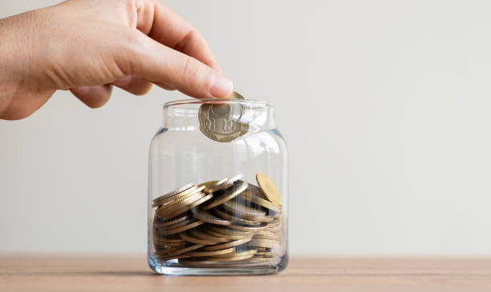
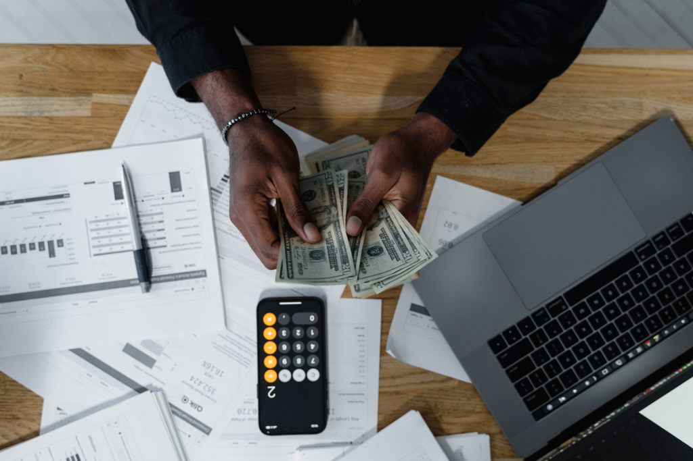

Saving | Budgeting | Spending Habits | Important Money Habits |
Saving money is one of the most important financial habits. It helps people prepare for emergencies and future goals such as education, travel, or starting a business.

Budgeting helps individuals control how they spend their money. By planning expenses each month or week, People can avoid unnecessary spending and focus on important needs.

Many people lose money through impulse buying and poor financial planning. Learning discipline and thinking carefully before spending can help maintain financial stability.
| Tip | Benefit | Example |
|---|---|---|
| Saving | Financial security | Save 20% of income |
| Budgeting | Controls spending | Monthly budget plan |
| Avoiding Debt | Less financial stress | Pay bills on time |
Learn more about financial education at Investopedia and Khan Academy Finance